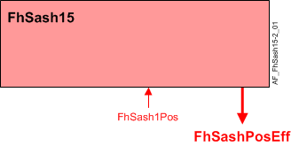

Fume hood sash, single vertical (FhSash15)
Overview
The application function "Fume hood sash 15, single vertical position" (FhSash15) is used to determine the sash position from a single resistive analog sash position input. Multiple vertical sash segments are supported, provided the segments do not move independently of each other and can be monitored with a single sash position sensor connected to the onboard analog input. The sash position will be shared with other AFs to determine exhaust volume setpoints and generate alarms.
Main features:
- Sash position calculation
- Sash position valid signal
Function

| Command or request (or related) |
| Notification of condition or status, or availability |
| Device mode |
| Interlock (internal signal, not a BACnet object; see Interlocks section for additional information) |


Effective sash position
Effective sash position is determined by the following:
- FhSash1Pos – Sash position from the sash sensor, analog input value.
- PosSenFail – Position on sensor failure, analog configuration extension.
- FhSashPosEff – Fume hood effective sash position, analog calculated value, for monitoring purposes only.
Sash position valid signal
The SashPosVld output is used by other modules to determine if the general fume hood failure alarm should be active. FhSashPosEff will only be set valid when FhSash1Pos sensor is valid.
Note
Sash sensor(s) must be calibrated. See Sash calibration and verification in Technical principals for more information.
Configuration
 Parameters
Parameters
Description | Parameter | Default value |
|---|---|---|
Position on sensor failure | PosSenFail | 50.0 [cm] |
Length unit | LngtUnit | [cm] |
Interface
Interface | Description | Type | Ref. | Owned by |
|---|---|---|---|---|
FhSash1Pos | Fume hood sash 1 position | AI | ◉ | Room segment / Field device |
FhSashPosEff | Fume hood effective sash position | ACalcVal | ● | - |
Engineering and commissioning
Optional.